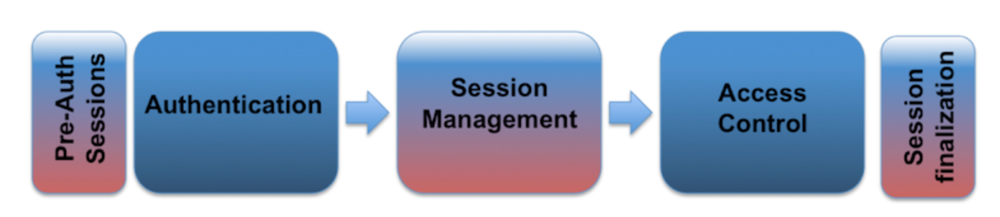

Table of Contents
简介
授权, 会话管理, 访问控制
一个web session指的是:
同一个用户的一系列http请求与响应。
业务中经常需要对同一个用户在一系列操作中保存用户信息，状态的需求。比如访问权限，地域设置等。
我们比较关注的是访问权限的控制。http协议是一个无状态协议RFC2616 [5]
每一个请求与响应的状态是独立的
所以我们需要保持用户的信息，这里引入会话管理的概念，会话管理的简图如下：

一般情况下，用户在得到访问授权之后，会得到一个session ID, 或者token, 这个标记会记录在之后的http请求交互中, 这个标识将用于用户之后的访问行为中标识用户已经拥有权限的标记。这个标记在之后的鉴权中，效果等同于应用的最高安全等级验证方式（密码，人脸，短信，视网膜等等）。由此这样一个标记的安全性是非常关键的。
在这样一个无状态的协议中，我们不得不将权限控制分成如上所述的三个部分。另外常用的web框架中对这三个模块的定义也不严格。所以这部分的工作一般是开发者手动实现的。所以实现一个安全的会话管理是很有挑战的。
对于session ID的泄露, 盗取, 预测, 暴力破解, 修复等等行为，都能导致session劫持。而这种攻击的后果是攻击者将获取受害者在业务中的所有权限。
而一般的常见攻击行为大致可以分为两类，针对性攻击，以及无差别攻击。
Session Id 的性质
为了保持对用户操作序列的感知，以及对用户权限的感知。应用一般会在session创建的时候颁布一个session的唯一标识（Session Id 或者 token）,这个标识会在用户与业务端交互中在前后端传递。Session Id 是一个 name = value 的属性。
Session Id 的名称
Session Id 的名称应当不包含任何信息不必要的信息。大部分的web框架会有默认session id名称规则，从session id的名称，可以反推出网站所用框架，这样会给攻击者提供关键信息。
Session Id 的长度
Session Id 的长度至少要128bit来防止暴力破解。
Session Id 的信息熵
Session Id 的信息熵至少64bit。并且要足够随机，以预防猜测破解。
Session Id 的value
Session Id 应当仅仅是一个标识，不包含任何敏感信息，以预防信息泄露以及利用已经泄露的敏感信息来生成session id。
会话管理的实现
会话管理的实现决定用户与应用交换以及会话信息的机制。在http协议中有多种机制可以用来保持会话状态，例如 cookie， url_rewrite, url_param(GET), url_body(POST), html中的隐藏信息，或者一些http的header。
Session Id 的交换机制，需要满足对一般token的性能要求。比较推荐的会话机制是使用cookie
(RFCs 2109 & 2965 & 6265 [1])
一些容易暴露Session Id的机制，比如url参数，会暴露session id。比如浏览器书签等方式，这样导致的session id泄露会导致其他威胁。
Built-in 会话管理机制的实现
Web开发框架，如J2EE、ASP.NET、PHP等，提供自己的会话管理功能和相关的实现。建议使用这些内置的框架，而不是从头开始构建一个主页，因为它们在全球多个Web环境中使用，并且随着时间的推移，已经通过Web应用程序安全和开发社区进行了测试。
不过，请注意，这些框架在过去也出现了漏洞和弱点，因此总是建议使用最新版本，这可能修复所有众所周知的漏洞，以及根据本文件所述的建议，审查和更改默认配置以增强其安全性。
会话管理机制用于临时保存会话ID的存储功能或存储库必须是安全的，保护会话ID不受本地或远程意外泄露或未授权访问的影响。
已使用与已接受的会话ID交换机制
Web应用程序应使用cookie进行会话ID交换管理。如果用户通过不同的交换机制（例如URL参数）提交会话ID，则Web应用程序应避免接受它作为阻止会话固定的防御策略的一部分。
注意：即使Web应用程序使用cookie作为其默认会话ID交换机制，它也可能接受其他交换机制。因此，在处理和管理会话ID时，需要通过全面测试确认Web应用程序当前接受的所有不同机制，并限制接受的会话ID跟踪 只有cookie的机制。在过去，一些Web应用程序使用URL参数，甚至从cookie切换到URL参数（通过自动URL重写），如果满足某些条件（例如，不支持cookie或不接受cookie的Web客户端的标识）用户隐私问题）。
传输层安全性
为了保护会话ID交换免受网络流量中的主动窃听和被动泄露，必须对整个Web会话使用加密的HTTPS（SSL / TLS）连接，而不仅仅是用户交换凭据的身份验证过程。
此外，必须使用“安全”cookie属性（见下文）来确保会话ID仅通过加密通道进行交换。加密通信通道的使用还可以保护会话免受某些会话固定攻击，其中攻击者能够拦截和操纵Web流量以在受害者Web上注入（或修复）会话ID 浏览器。
以下一组HTTPS（SSL / TLS）最佳实践侧重于保护会话ID（特别是在使用cookie时）并帮助在Web应用程序中集成HTTPS：
Web应用程序永远不应该将给定会话从HTTP切换到HTTPS，反之亦然，因为这将通过网络以明文形式公开会话ID。
Web应用程序不应将加密和未加密的内容（HTML页面，图像，CSS，Javascript文件等）混合在同一主机（甚至是域 - 请参阅“域”cookie属性）上，作为未加密的任何Web对象的请求频道可能会披露会话ID。
一般来说，Web应用程序不应该提供 公共未加密内容和来自同一主机的私有加密内容。建议改为使用两个不同的主机，例如通过HTTP（未加密）的www.example.com用于公共内容，而使用HTTPS（加密）的secure.example.com用于私有和敏感内容（存在会话）。前一个主机只有端口TCP / 80打开，而后者只有端口TCP / 443打开。
Web应用程序应避免主页上极其常见的HTTP到HTTPS重定向（使用30x HTTP响应），因为攻击者可以使用此单个不受保护的HTTP请求/响应交换来收集（或修复）有效的会话ID。
Web应用程序应该使用“HTTP Strict” 传输安全性（HSTS）“（以前称为STS）以强制实施HTTPS连接。
请参阅OWASPTransport Layer Protection Cheat Sheet
重要的是要强调SSL / TLS（HTTPS）不能防止会话ID预测，暴力破解，客户端篡改或固定。然而，即使在今天，会话ID公开和从网络流量中捕获也是最流行的攻击向量之一。
OWSAP Session Management Cheat Sheet
Cookies
基于Cookie的会话ID交换机制提供了可用于保护会话ID交换的Cookie属性的多个安全特性：
Secure 属性
“Secure” cookie属性指示Web浏览器仅通过加密的HTTPS（SSL / TLS）连接发送cookie。此会话保护机制是强制性的，以防止通过MitM（中间人）攻击泄露会话ID。它确保攻击者无法简单地从Web浏览器流量中捕获会话ID。
强制Web应用程序仅使用HTTPS进行通信（即使在Web应用程序主机中关闭端口TCP / 80，HTTP），如果尚未设置“安全”cookie，则无法防止会话ID泄露 - Web浏览器可以欺骗通过未加密的HTTP连接公开会话ID。攻击者可以拦截 并操纵受害者用户流量并向Web应用程序注入HTTP未加密的引用，该引用将强制Web浏览器以明文形式提交会话ID。
另请参见：SecureFlag
未完待续